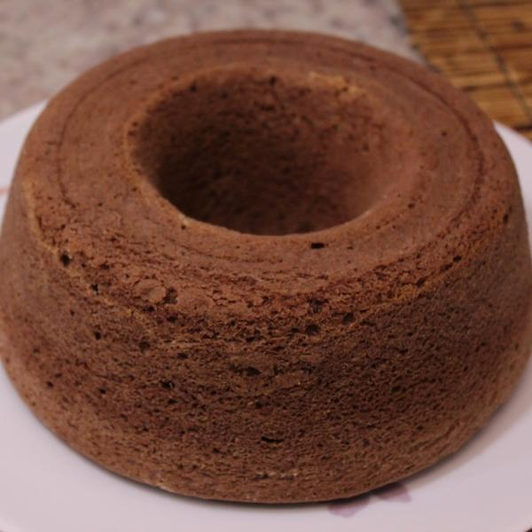
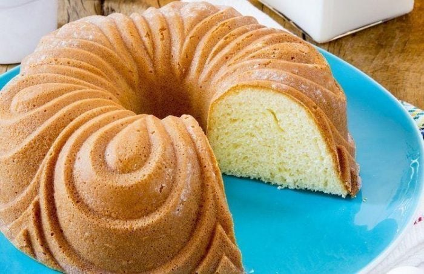

Receita de Bolo Simples Caseiro

Ingredientes
3 xícaras de chá de farinha de trigo (Sem fermento)
2 xícaras de chá de açúcar
3 ovos
200 ml de leite
4 colheres sopa de manteiga
1 colher de sopa de fermento químico em pó
Modo de preparo
Numa tigela, junte os ovos, o açúcar e a manteiga.
Misture tudo muito bem e adicione o leite.
Continue misturando e depois adicione toda a farinha de trigo.
Misture até que a massa fique bem homogênea.
Por ultimo, adicione o fermento e misture delicadamente até que agregue completamente na massa.
Despeje a massa do bolo simples caseiro numa forma untada e enfarinhada.
Leve para assar em forno preaquecido, 180ºC, por cerca de 40 minutinhos ou até dourar.
